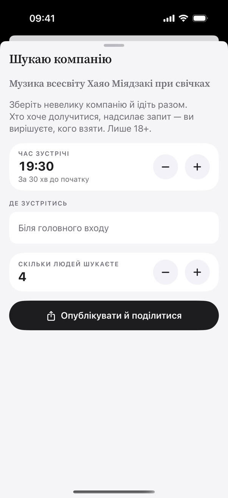
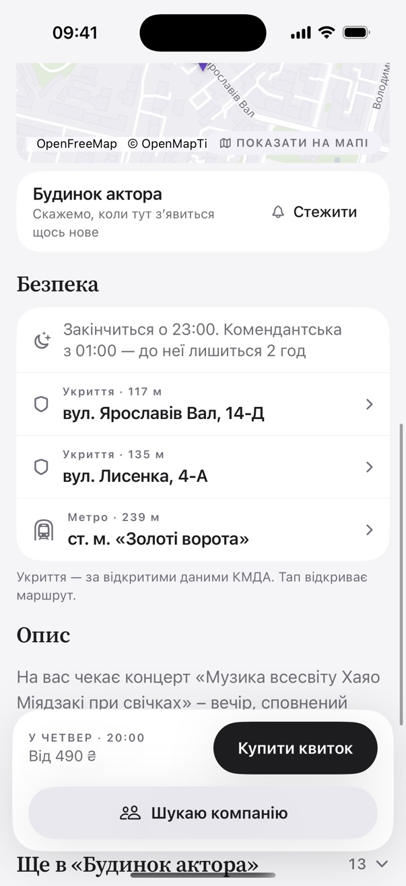

Мапа замість нескінченної стрічки
Сотні подій міста на одній мапі, з кольором за категорією. Фільтри «сьогодні», «вихідні», «є вільні місця» — і видно, що відбувається за кілька кварталів від вас.

Афіша міста на мапі: за хвилину знайдете, куди піти сьогодні ввечері чи на вихідних — і з ким.
Або подивіться афішу просто тутСправжня афіша, а не скріншоти: відкрийте будь-яку подію — дата, місце, ціна й квитки.
Сотні подій міста на одній мапі, з кольором за категорією. Фільтри «сьогодні», «вихідні», «є вільні місця» — і видно, що відбувається за кілька кварталів від вас.
Концерти, вистави й стендап з квиткових сервісів — поруч із настолками, пробіжками й розмовними клубами, які створюють такі самі люди, як ви.
Афішні події беруться з відкритих джерел із зазначенням джерела; квитки купуються на сайті організатора.

Хто виступає, коли й де, ціна й квитки. Нагадування за годину до початку, експорт у календар і маршрут у мапах.

«Шукаю компанію» збирає невелику компанію на конкретну подію. Хто хоче долучитися, надсилає запит — ви вирішуєте, кого взяти. Лише 18+.

Біля кожної київської події — найближчі укриття й метро, а ще час до комендантської. Скарга й блокування — з екрана будь-якої події.
Укриття — за відкритими даними КМДА, поки що в Києві.

Опис, точка на мапі, час і кількість місць. Черга очікування, підтвердження учасників, вікові межі й чат — уже всередині.

«Мої події» збирають усе, куди ви йдете й що зберегли. Стежте за улюбленими закладами, артистами й організаторами — скажемо, щойно з’явиться нове.

Від стендапу до екскурсій. Числа — справжні: стільки подій у Києві просто зараз.
Афіша відкрита всім. Усе, що робить вечір вашим, живе в застосунку.
Відкрийте застосунок — і за хвилину знайдете, куди піти сьогодні ввечері чи на вихідних.